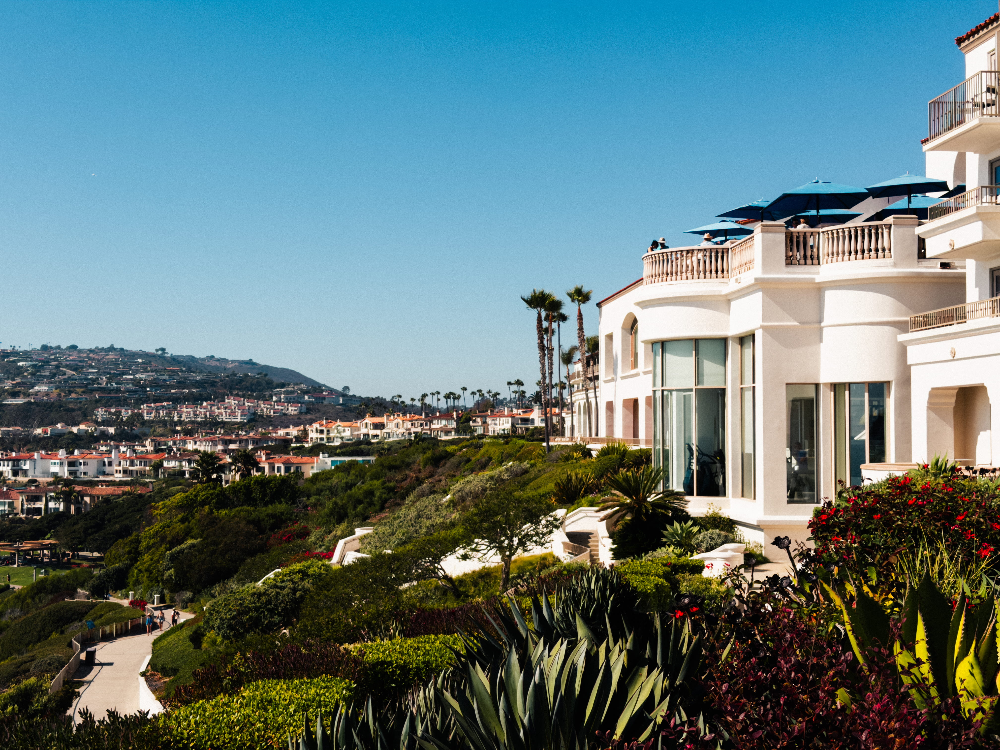
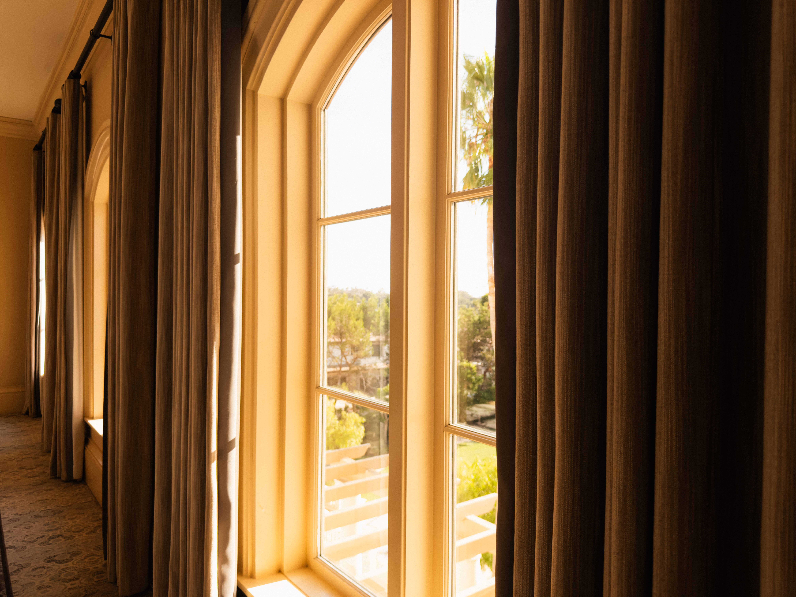
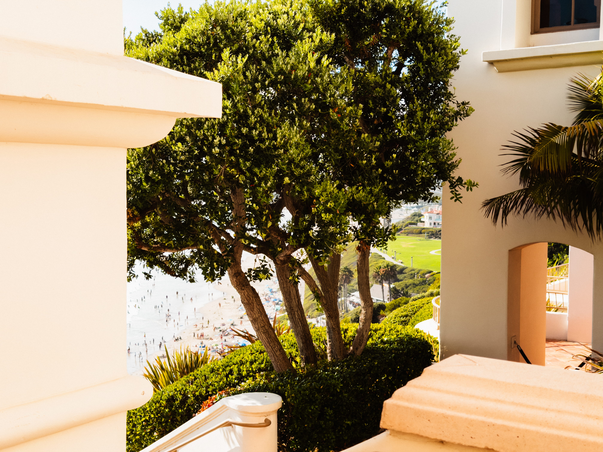
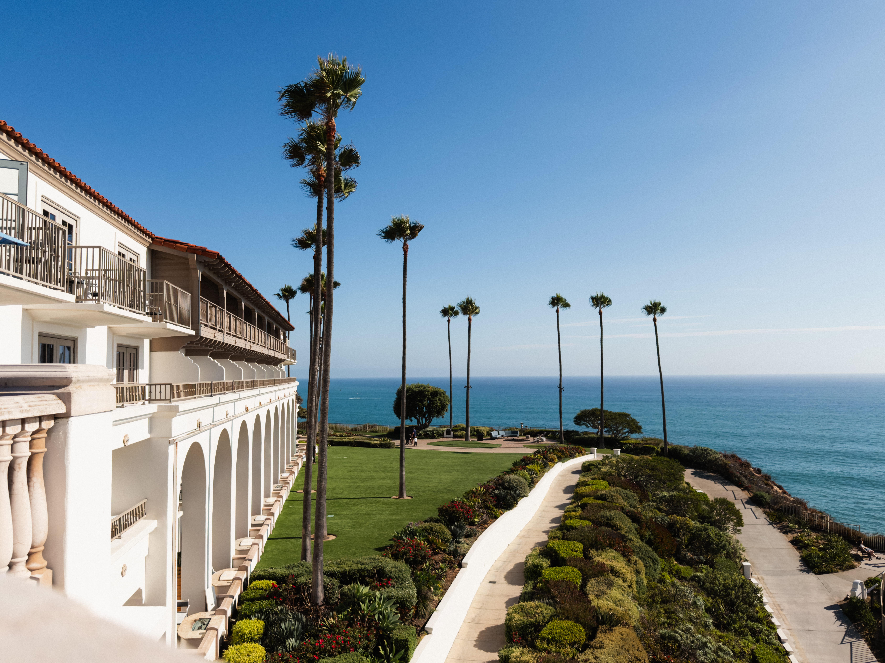
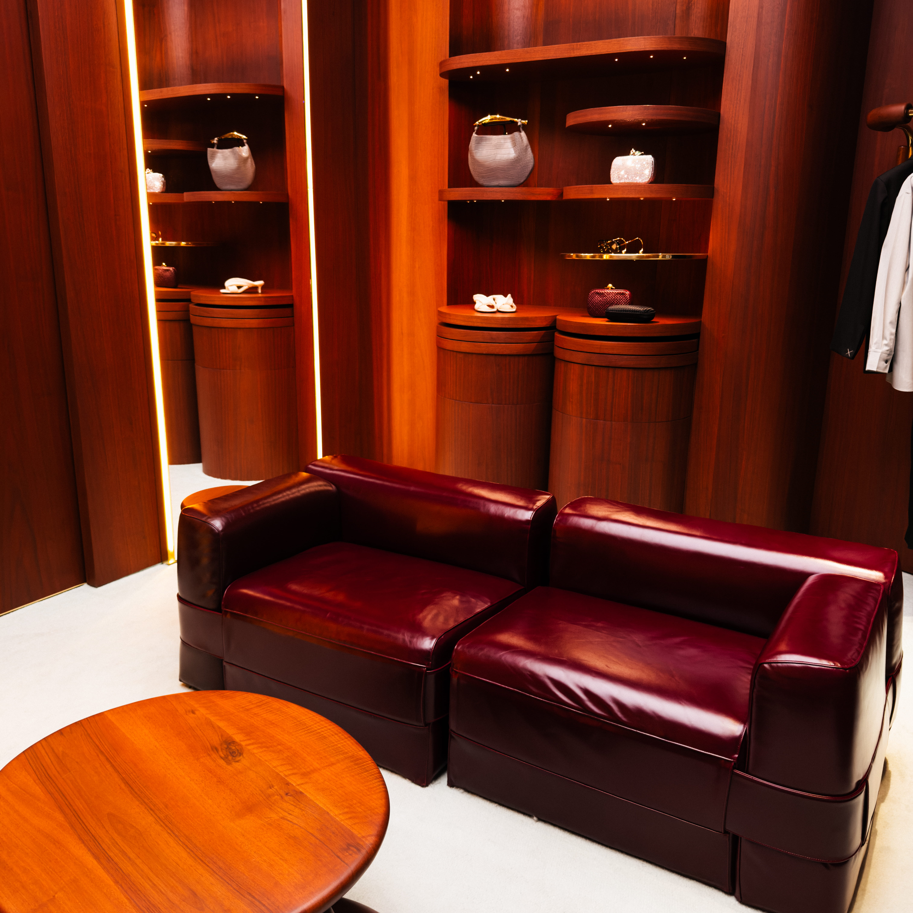
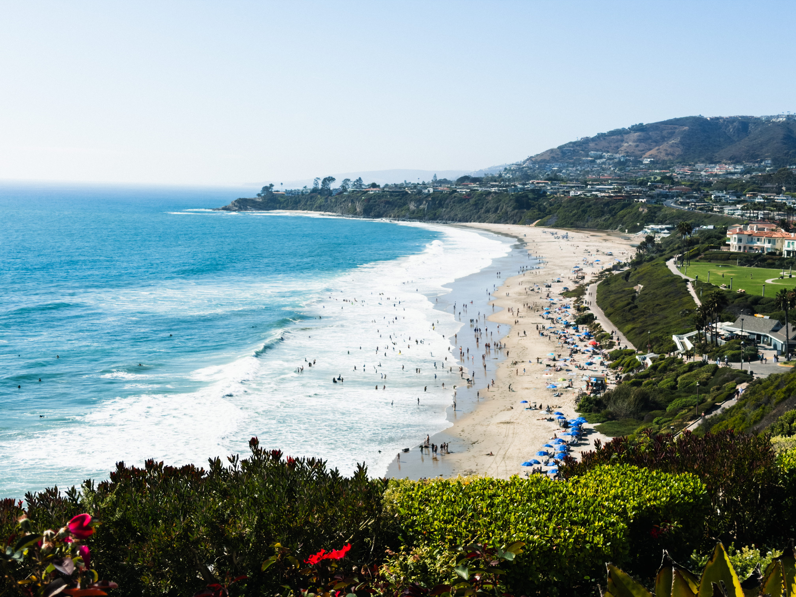
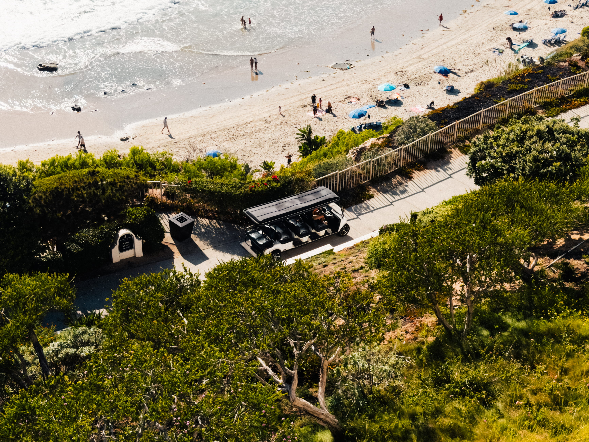
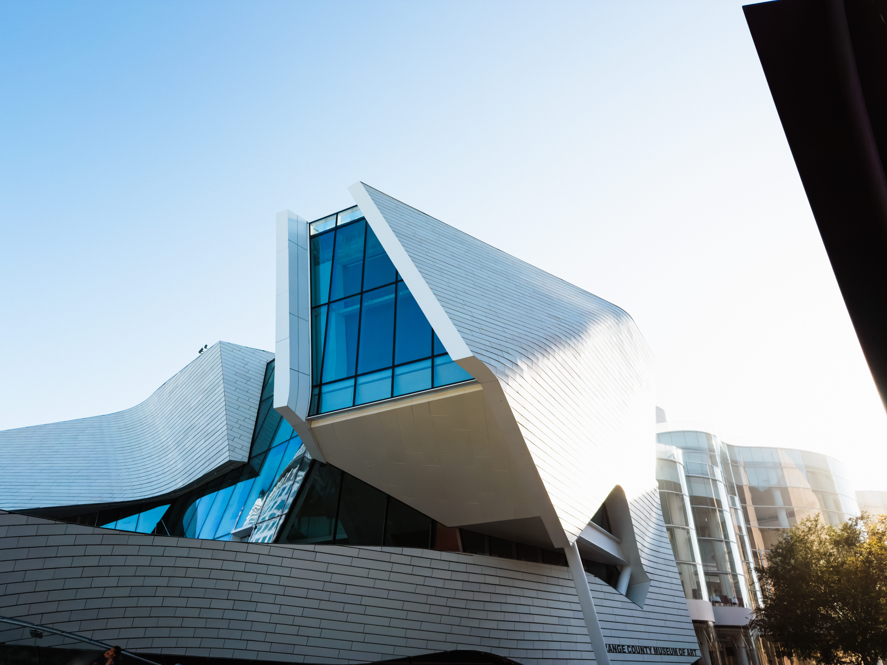

MAISON KRIZSAN
Certain places deserve to be kept.
In photograph. In film. In record.
The House
Some places are more than destinations.
They are the expression of a landscape, the vision of their creators, and the passage of generations. Maison Krizsan exists to reveal the character of these exceptional places through a considered archive of photography, film, and story.
The Philosophy
Some places are beautiful. Fewer are true. We look for the difference.
Presence
The atmosphere that remains long after the moment has passed.
Craft
The details shaped through patience, intention, and human hands.
Permanence
What deserves remembrance, we do not let disappear.
Destinations












The Archive
Not everything is kept. What remains, remains for a reason.
Films
Moving portraits preserving the atmosphere and spirit of place.
Editions
Limited photographic works created as lasting records of place.
Journal
Observations on architecture, culture, craftsmanship, and heritage.

The Krizsan Standard
We do not photograph what is impressive. We wait for what is true.
- Time.
- We return until the light is right.
- Craft.
- We notice what a hand made, not just what a hand bought.
- Place.
- We document the spirit, not the amenities.
- Legacy.
- We keep what will still matter in fifty years.
Inquiries
MAISON KRIZSAN partners with exceptional hotels, villas, and estates to preserve their story through timeless visual storytelling.
We are drawn to places with character earned over time, where architecture, landscape, hospitality, and craftsmanship exist in harmony.
Through cinematic photography and film, we create a lasting archive that reflects the true spirit of each property and introduces it to a discerning global audience.
If that describes a place you know, we would like to hear from you.
Begin a CollaborationMAISON KRIZSAN
Independent visual house
California · Europe
Established 2026